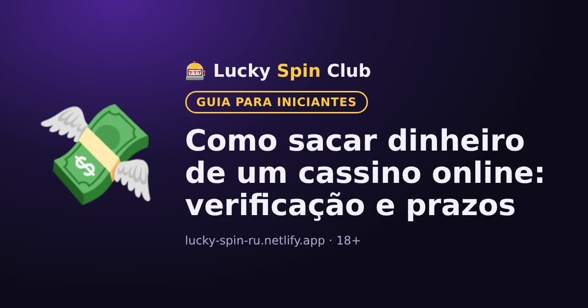

Como sacar dinheiro de um cassino online: verificação e prazos

Atualizado: 6 de novembro de 2026
Ganhar é bom, mas também é preciso sacar. Veja o que saber com antecedência.
Verificação
Antes do primeiro saque, o cassino geralmente pede para confirmar sua identidade: foto de um documento e, às vezes, um comprovante do método de pagamento. É uma checagem padrão. Fazer antes evita esperas depois.
O mesmo método do depósito
Muitas vezes o saque só é possível para a mesma carteira ou cartão usado no depósito.
Prazos
O pedido é primeiro analisado pelo cassino e depois o dinheiro é enviado pelo sistema de pagamento. Os prazos exatos estão na seção “Pagamentos”.
Por que um saque pode atrasar
- A verificação não foi concluída.
- Há um bônus ativo sem rollover cumprido.
- Os dados do perfil não batem com os documentos.
- O valor está abaixo do mínimo ou acima do limite.
Quer experimentar? O cadastro leva cerca de um minuto.
🎁 Cadastrar e pegar o bônusPerguntas frequentes
Por que o cassino pede documentos antes do saque?
É uma checagem padrão (verificação): o cassino precisa confirmar a idade e a identidade do jogador e evitar fraudes.
Posso sacar para outro cartão?
Muitas vezes o saque só é possível para o mesmo método usado no depósito. As regras exatas estão na seção “Pagamentos”.
Por que meu saque está atrasado?
Motivos comuns: verificação incompleta, bônus ativo sem rollover cumprido, dados do perfil diferentes dos documentos ou valor fora dos limites.